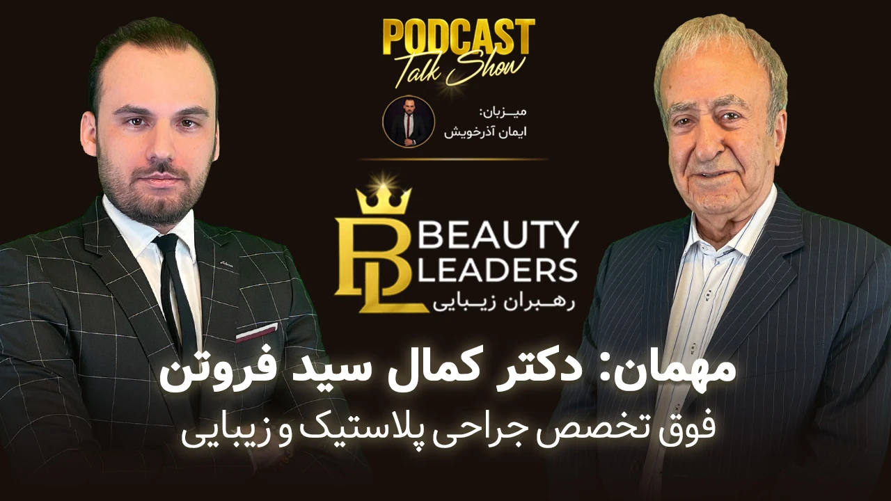
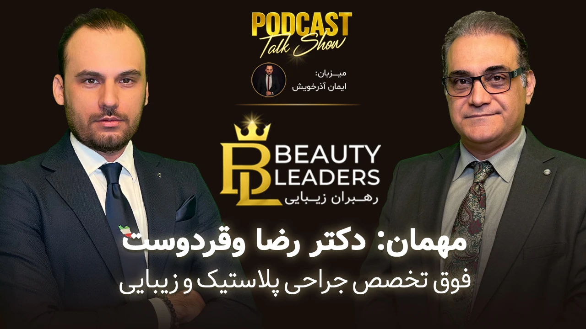

رهبران زیبایی ·
چه کسی صلاحیت انجام خدمات زیبایی را دارد؟
متخصص پوست و مو و استادتمام دانشگاه علوم پزشکی تهران
آرشیو رسانه
30 گفتگوی منتشرشده با پزشکان و متخصصان؛ شامل دو مجموعه «رهبران زیبایی» و «سفیران زیبایی». در اینجا معرفی کوتاه هر مهمان را میبینید و برای تماشای ویدئو به یوتیوب میروید.
رهبران زیبایی ·
متخصص پوست و مو و استادتمام دانشگاه علوم پزشکی تهران

رهبران زیبایی ·
متخصص پوست و مو و دارای سابقه فعالیت صنفی و علمی در درماتولوژی

رهبران زیبایی ·
فوقتخصص جراحی پلاستیک و ترمیمی؛ اولین استادتمام جراحی پلاستیک دانشگاه تهران

رهبران زیبایی ·
فوقتخصص جراحی پلاستیک، زیبایی و ترمیمی


رهبران زیبایی ·
فوقتخصص جراحی پلاستیک و ترمیمی؛ دارای تجربه جراحی میکروسکوپی

رهبران زیبایی ·
فوقتخصص جراحی پلاستیک و ترمیمی؛ دارای بورد تخصصی و فوقتخصصی

رهبران زیبایی ·
فوقتخصص جراحی پلاستیک و ترمیمی؛ دارای بورد فوقتخصصی جراحی پلاستیک و بورد تخصصی جراحی عمومی

سفیران زیبایی ·
پزشک زیبایی و پژوهشگر حوزه درماتولوژی زیبایی

رهبران زیبایی ·
فوقتخصص جراحی پلاستیک و ترمیمی؛ دارای بورد تخصصی و فوقتخصصی
موردی پیدا نشد.